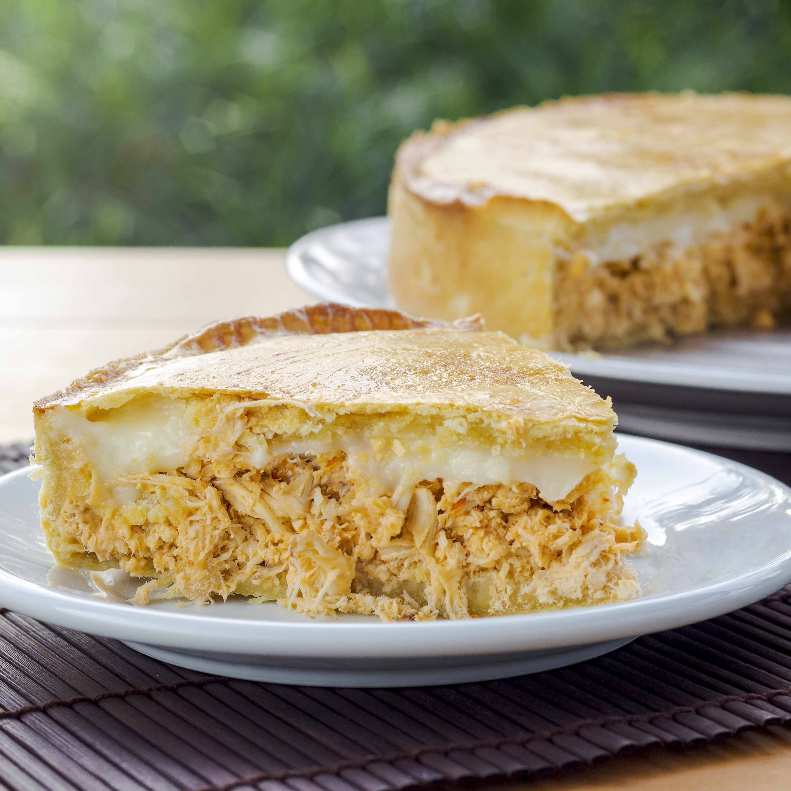
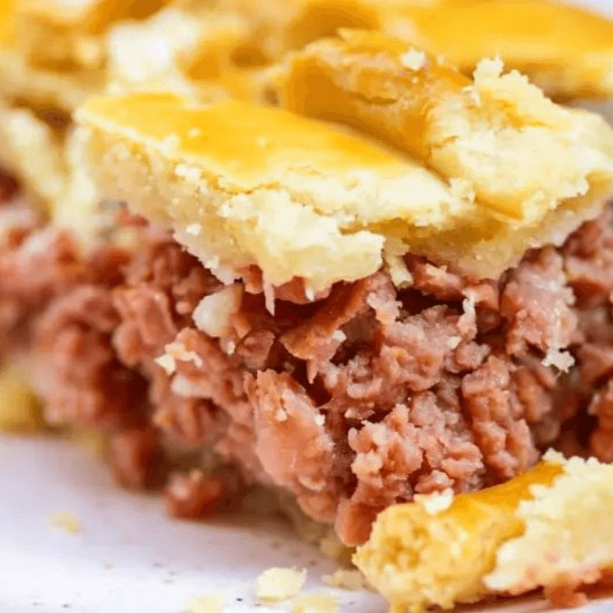
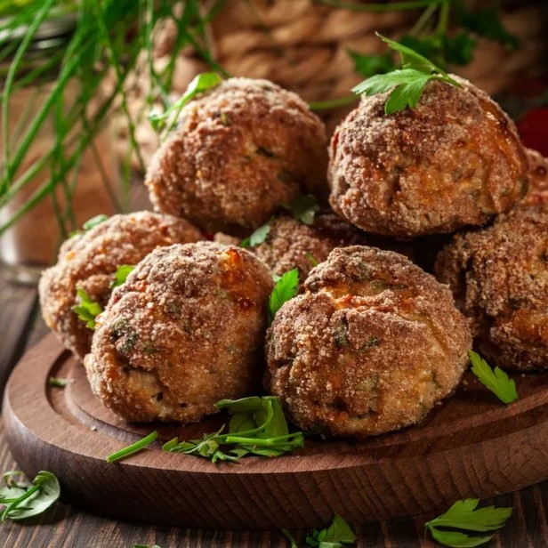
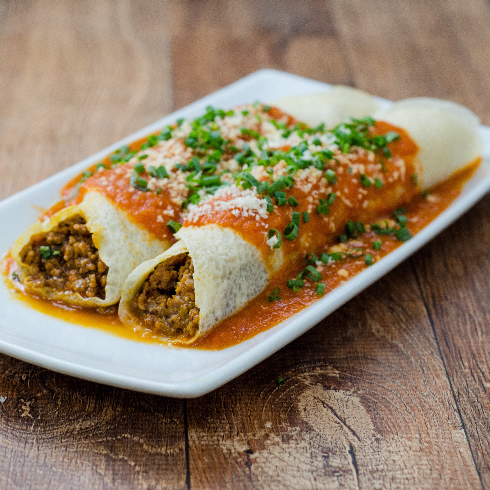

TORTA DE FRANGO
Ingredientes
500 g de peito de frango sem pele
1/2 litro de caldo de galinha
4 colheres (sopa) de óleo
1 dente de alho amassado
1 cebola picada
3 tomates sem pele e sem sementes
1 xícara (chá) de ervilhas
sal a gosto
pimenta-do-reino a gosto
Massa
250 ml de leite
3/4 de xícara (chá) de óleo
2 ovos
1 e 1/2 xícara (chá) de farinha de trigo
sal a gosto
1 colher (sopa) de fermento em pó
queijo ralado a gosto
ESFIHA ABERTA
Ingredientes
1 kg de farinha de trigo
30 g de fermento biológico seco
3/4 xícara (chá) de açúcar refinado (125 g)
125 ml de óleo de soja
500 a 700ml de água morna
1 colher de (sopa) sal refinado
fubá para polvilhar
Recheio de queijo
700g de queijo branco amassado
1 xícara de salsinha picada
1 xícara de cebolinha picada
6 colheres (sopa) de creme de leite
1 colher de (chá) fermento em pó (serve para dar consistência e uniformizar o recheio)
sal a gosto
Recheio de carne
700g de carne moída
5 tomates picados
1 cebola picada
1/2 xícara (chá) de hortelã
suco de 2 limões
sal a gosto
pimenta a gosto

TORTA DE CALABRESA
Ingredientes
2 gomos de linguiça calabresa em cubos
2 colheres (sopa) de azeite
1 cebola picada
2 dentes de alho amassados
2 tomates sem sementes em cubos
Pimenta-do-reino, orégano e cheiro-verde picado a gosto
1 e 1/2 xícara (chá) de queijo muçarela em cubos pequenos
1 pacote de pão de forma sem casca
1/2 xícara (chá) de queijo parmesão ralado fino
Molho
2 colheres (sopa) de manteiga
2 colheres (sopa) de farinha de trigo
2 xícaras (chá) de leite
1 caixa de creme de leite (200g)
Sal e noz-moscada ralada a gosto

PASTEL DE FRANGO
Ingredientes
1 e 1/2 colher (sopa)de manteiga
1 ovo
1 colher (sopa) de fermento em pó
5 xícaras de farinha de trigo
5 xícaras de queijo minas ralado
¾ de xícara de leite morno (reserve)
Recheio
1 Kg de peito de frango desossado
1 cebola média picada
2 dentes de alho picados e amassados
1 tomate sem pele picado
1 colher (sopa) de azeite
cheiro-verde picado
1 lata de milho-verde
1 lata de molho de tomate
1 colher (sopa) cheia de farinha de trigo
3 tabletes de caldo de galinha
azeitonas picadas
PIZZA DE PEPPERONI
Ingredientes
250 g de farinha de trigo
150 ml de água morna
2 colheres de sopa de fermento biológico
1 colher de sopa de açúcar
1/2 colher de sopa de sal
1 colher de sopa de azeite de oliva
Molho
2 dentes de alho
1/2 cebola picada
2 tomates maduros descascados e sem sementes
1/4 copo de água
3 colheres de azeite
1 pitada de açúcar
Cobertura
Salame italiano, finamente fatiado
1/2 pimentão em rodelas
Queijo mussarela em fatias
Pimenta calabresa (opcional)

BOLINHO DE CARNE
Ingredientes
1/2 kg de carne moída
3 colheres (sopa) de farinha de trigo
cebola
alho
1 ovo
temperos a gosto

PANQUECA DE CARNE MOÍDA
Ingredientes
1 e 1/2 xícara (chá) de farinha de trigo
1 xícara (chá) de leite
2 ovos
4 colheres (sopa) de óleo
sal a gosto
300 g de carne moída
2 colheres (sopa) de cebola picada ou ralada
1/2 tomate cortado em cubos
1/2 lata de extrato de tomate
1 caixa de creme de leite
sal a gosto
400 g de muçarela fatiado
queijo ralado a gosto